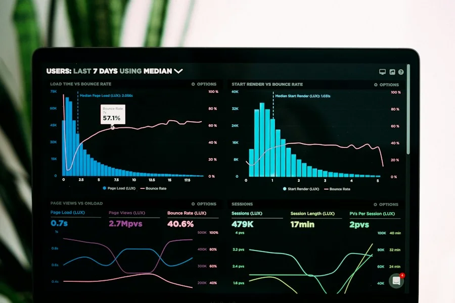

01 — UNDERSTAND THE BUSINESS
See the Bigger Picture
Understand the financial position, business model, performance drivers and factors that influence business value.
Make important business and transaction decisions with greater confidence. We bring financial insight, structured analysis and strategic perspective to business valuation and M&A advisory.
Objective Analysis & Strategic Depth
Business value is influenced by more than financial statements. Understanding the wider business context, opportunities and risks helps support better-informed decisions.
Understand the financial position, business model, performance drivers and factors that influence business value.
Explore the strengths, opportunities and strategic considerations that can influence future business performance.
Bring financial insight and structured analysis into important valuation and transaction decisions.
From understanding business value to preparing for strategic transactions, explore our advisory capabilities.
Understand the financial and strategic factors that influence business value through structured valuation analysis.
Explore transaction opportunities, strategic considerations and important stages of M&A activity.
Examine financial information, performance drivers and key considerations relevant to a potential transaction.

Bring clarity to financial performance, business trends and the information behind important decisions.
Support transaction preparation through organised financial information and structured analysis.
A well-considered valuation can help business owners and decision-makers understand financial performance, assess strategic opportunities and prepare for significant business decisions.
Understand business value as part of long-term planning.
Support discussions around ownership changes, succession and business transitions.
Build a clearer understanding of financial and operational considerations before a transaction.
Use structured financial insight to support important commercial discussions.
Every business has its own financial story. A structured approach helps bring relevant information, analysis and strategic considerations together.
Understand the business context, objectives, available information and scope of the engagement.
Review relevant financial information, business performance and factors influencing value.
Consider findings, assumptions, risks and strategic implications.
Present clear findings and relevant insights to support informed decision-making.
Explore practical perspectives on business valuation, financial performance and strategic transactions.
Explore how financial performance, business risks and strategic considerations can influence an assessment of business value.
Consider the financial information, business documentation and planning involved in preparing for a possible business sale.

Understand some of the financial, operational and strategic questions that may arise during acquisition planning.
Access useful information to help organise your thinking around valuation, business planning and transaction preparation.
Learn about the financial information and business details that may be useful when preparing for a valuation exercise.
Key documentation and qualitative context typically reviewed during independent valuation engagements.
View ChecklistAn overview of historical statements, normalized earnings, and asset schedules that provide essential clarity.
View Preparation GuideStrategic and operational readiness factors to assess prior to entering transactional discussions.
View ConsiderationsWhether you are considering a business valuation, exploring an acquisition or preparing for a transaction, start with a conversation about your objectives.